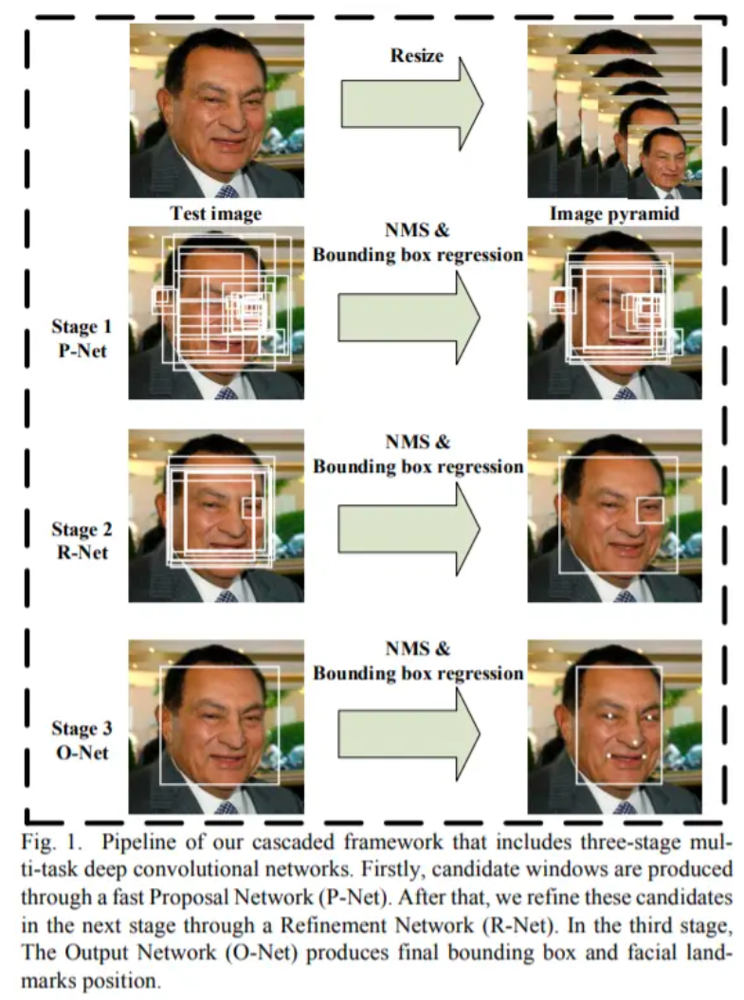
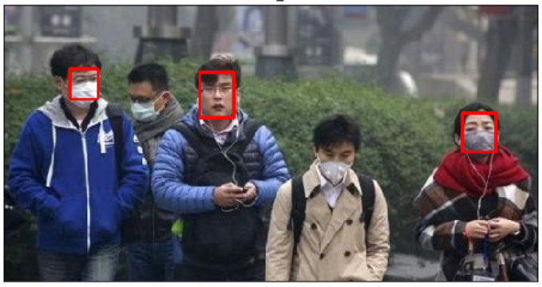

口罩佩戴检测
实验介绍
实验背景
今年一场席卷全球的新型冠状病毒给人们带来了沉重的生命财产的损失。效防御这种传染病毒的方法就是积极佩戴口罩。我国对此也采取了严肃的措施，在公共场合要求人们必须佩戴口罩。
在本次实验中，我们要建立一个目标检测的模型，可以识别图中的人是否佩戴了口罩。
实验要求
- 建立深度学习模型，检测出图中的人是否佩戴了口罩，并将其尽可能调整到最佳状态。
- 学习OpenCV dnn的使用方法，以及经典模型 MobileNetV2 的结构。
- 学习训练时的方法。
实验环境
可以使用基于 Python 的 OpenCV 、PIL 库进行图像相关处理，使用 Numpy 库进行相关数值运算，使用 MindSpore 等深度学习框架训练模型等。
参考资料
实验思路
针对目标检测的任务，可以分为两个部分：目标识别和位置检测。通常情况下，特征提取需要由特有的特征提取神经网络来完成，如 VGG、MobileNet、ResNet 等，这些特征提取网络往往被称为 Backbone 。而在 BackBone 后面接全连接层(FC)就可以执行分类任务。但 FC 对目标的位置识别乏力。经过算法的发展，当前主要以特定的功能网络来代替 FC 的作用，如 Mask-Rcnn、SSD、YOLO 等。
我们选择充分使用已有的人脸检测的模型，再训练一个识别口罩的模型，从而提高训练的开支、增强模型的准确率。
常规检测：
本次实验：
MTCNN人脸检测
制作批量数据集
图片生成器 ImageDataGenerator: keras.preprocessing.image 模块中的图片生成器，主要用以生成一个 batch 的图像数据，支持实时数据提升。训练时该函数会无限生成数据，直到达到规定的 epoch 次数为止。同时也可以在 batch 中对数据进行增强，扩充数据集大小，增强模型的泛化能力，比如进行旋转，变形，归一化等等。
图片生成器的主要方法：
- fit(x, augment=False, rounds=1)：计算依赖于数据的变换所需要的统计信息(均值方差等)。
-
flow(self, X, y, batch_size=32, shuffle=True, seed=None, save_to_dir=None, save_prefix='', save_format='png')：接收 Numpy 数组和标签为参数,生成经过数据提升或标准化后的 batch 数据，并在一个无限循环中不断的返回 batch 数据。
-
flow_from_directory(directory): 以文件夹路径为参数，会从路径推测 label，生成经过数据提升/归一化后的数据，在一个无限循环中无限产生 batch 数据。
根据上面的介绍和我们数据集的特性，我们主要运用 ImageDataGenerator() 和 flow_from_directory() 方法。我们将数据处理过程封装成为一个函数：
| # 导入图片生成器
from tensorflow.keras.preprocessing.image import ImageDataGenerator
def processing_data(data_path, height, width, batch_size=32, test_split=0.1):
"""
数据处理
:param data_path: 带有子目录的数据集路径
:param height: 图像形状的行数
:param width: 图像形状的列数
:param batch_size: batch 数据的大小，整数，默认32。
:param test_split: 在 0 和 1 之间浮动。用作测试集的训练数据的比例，默认0.1。
:return: train_generator, test_generator: 处理后的训练集数据、验证集数据
"""
train_data = ImageDataGenerator(
# 对图片的每个像素值均乘上这个放缩因子，把像素值放缩到0和1之间有利于模型的收敛
rescale=1. / 255,
# 浮点数，剪切强度（逆时针方向的剪切变换角度）
shear_range=0.1,
# 随机缩放的幅度，若为浮点数，则相当于[lower,upper] = [1 - zoom_range, 1+zoom_range]
zoom_range=0.1,
# 浮点数，图片宽度的某个比例，数据提升时图片水平偏移的幅度
width_shift_range=0.1,
# 浮点数，图片高度的某个比例，数据提升时图片竖直偏移的幅度
height_shift_range=0.1,
# 布尔值，进行随机水平翻转
horizontal_flip=True,
# 布尔值，进行随机竖直翻转
vertical_flip=True,
# 在 0 和 1 之间浮动。用作验证集的训练数据的比例
validation_split=test_split
)
# 接下来生成测试集，可以参考训练集的写法
test_data = ImageDataGenerator(
rescale=1. / 255,
validation_split=test_split)
train_generator = train_data.flow_from_directory(
# 提供的路径下面需要有子目录
data_path,
# 整数元组 (height, width)，默认：(256, 256)。 所有的图像将被调整到的尺寸。
target_size=(height, width),
# 一批数据的大小
batch_size=batch_size,
# "categorical", "binary", "sparse", "input" 或 None 之一。
# 默认："categorical",返回one-hot 编码标签。
class_mode='categorical',
# 数据子集 ("training" 或 "validation")
subset='training',
seed=0)
test_generator = test_data.flow_from_directory(
data_path,
target_size=(height, width),
batch_size=batch_size,
class_mode='categorical',
subset='validation',
seed=0)
return train_generator, test_generator
|
MTCNN介绍
MTCNN源文献：《Joint Face Detection and Alignment using Multi-task Cascaded Convolutional Networks》
1）三阶段的级联（cascaded）架构
2）coarse-to-fine 的方式
3）new online hard sample mining 策略
4）同时进行人脸检测和人脸对齐
5）state-of-the-art 性能

调用MTCNN
这里直接使用现有的表现较好的 MTCNN 的三个权重文件，它们已经保存在 datasets/5f680a696ec9b83bb0037081/momodel/data/keras_model_data文件夹下。通过搭建 MTCNN 网络实现人脸检测（搭建模型py文件在 keras_py 文件夹）。
- keras_py/mtcnn.py 文件是在搭建 MTCNN 网络。
- keras_py/face_rec.py 文件是在绘制人脸检测的矩形框。
| # 读取测试图片
img = cv.imread("test1.jpg")
# 转换通道
img = cv.cvtColor(img, cv.COLOR_RGB2BGR)
# 加载模型进行识别口罩并绘制方框
detect = face_rec(pnet_path,rnet_path,onet_path)
detect.recognize(img)
# 展示结果
fig = plt.figure(figsize = (8,8))
ax1 = fig.add_subplot(111)
ax1.set_xticks([])
ax1.set_yticks([])
ax1.set_title('mask_1')
ax1.imshow(img)
|

这里也可以发现，使用的MTCNN模型仍是有瑕疵的，对于输入的图像会出现漏检问题，这里会在后面的调试中进一步体现。
口罩识别
预训练模型MobileNet
MobileNet网络是由google团队在2017年提出的，专注于移动端或者嵌入式设备中的轻量级CNN网络。相比传统卷积神经网络，在准确率小幅降低的前提下大大减少模型参数与运算量。(相比VGG16准确率减少了0.9%，但模型参数只有VGG的1/32)。
下表中可见MobileNet v2的整体网络结构。

加载预训练的MobileNet
| # 加载 MobileNet 的预训练模型权重
weights_path = basic_path + 'keras_model_data/mobilenet_1_0_224_tf_no_top.h5'
# 图像数据的行数和列数
height, width = 160, 160
model = MobileNet(input_shape=[height,width,3],classes=2)
model.load_weights(weights_path,by_name=True)
print('加载完成...')
|
保存模型
为了避免训练过程中遇到断电等突发事件，导致模型训练成果无法保存。我们可以通过 ModelCheckpoint 规定在固定迭代次数后保存模型。同时，我们设置在下一次重启训练时，会检查是否有上次训练好的模型，如果有，就先加载已有的模型权重。这样就可以在上次训练的基础上继续模型的训练了。
| def save_model(model, checkpoint_save_path, model_dir):
"""
保存模型，每迭代3次保存一次
:param model: 训练的模型
:param checkpoint_save_path: 加载历史模型
:param model_dir:
:return:
"""
if os.path.exists(checkpoint_save_path):
print("模型加载中")
model.load_weights(checkpoint_save_path)
print("模型加载完毕")
checkpoint_period = ModelCheckpoint(
# 模型存储路径
model_dir + 'ep{epoch:03d}-loss{loss:.3f}-val_loss{val_loss:.3f}.h5',
# 检测的指标
monitor='val_acc',
# ‘auto’，‘min’，‘max’中选择
mode='max',
# 是否只存储模型权重
save_weights_only=False,
# 是否只保存最优的模型
save_best_only=True,
# 检测的轮数是每隔2轮
period=2
)
return checkpoint_period
|
训练策略
学习率调整
学习率的手动设置可以使模型训练更加高效。
这里我们设置当模型在三轮迭代后，准确率没有上升，就调整学习率。
| # 学习率下降的方式，acc三次不下降就下降学习率继续训练
reduce_lr = ReduceLROnPlateau(
monitor='accuracy', # 检测的指标
factor=0.5, # 当acc不下降时将学习率下调的比例
patience=3, # 检测轮数是每隔三轮
verbose=2 # 信息展示模式
)
|
早停法
当我们训练深度学习神经网络的时候通常希望能获得最好的泛化性能。但是所有的标准深度学习神经网络结构如全连接多层感知机都很容易过拟合。当网络在训练集上表现越来越好，错误率越来越低的时候，就极有可能出现了过拟合。早停法就是当我们在检测到这一趋势后，就停止训练，这样能避免继续训练导致过拟合的问题。
| early_stopping = EarlyStopping(
monitor='val_accuracy', # 检测的指标
min_delta=0.0001, # 增大或减小的阈值
patience=3, # 检测的轮数频率
verbose=1 # 信息展示的模式
)
|
打乱训练数据
打乱txt的行，这个txt主要用于帮助读取数据来训练，打乱的数据更有利于训练。
| np.random.seed(10101)
np.random.shuffle(lines)
np.random.seed(None)
|
模型训练
选择不同的batch_size,learing_rate,epochs进行训练，观察（train_loss,val_loss) (train_acc,val_acc)图像，分析结果，调整参数，进一步训练。
| # 一次的训练集大小
batch_size = 32
# 图片数据路径
data_path = basic_path + 'image'
# 图片处理
train_generator,test_generator = processing_data(data_path, height=160, width=160, batch_size=batch_size, test_split=0.1)
# 编译模型
model.compile(loss='binary_crossentropy', # 二分类损失函数
optimizer=Adam(lr=0.002), # 优化器
metrics=['accuracy']) # 优化目标
# 训练模型
history = model.fit(train_generator,
epochs=20, # epochs: 整数，数据的迭代总轮数。
# 一个epoch包含的步数,通常应该等于你的数据集的样本数量除以批量大小。
steps_per_epoch=637 // batch_size,
validation_data=test_generator,
validation_steps=70 // batch_size,
initial_epoch=0, # 整数。开始训练的轮次（有助于恢复之前的训练）。
callbacks=[checkpoint_period, reduce_lr])
# 保存模型
model.save_weights(model_dir + 'temp.h5')
plt.plot(history.history['loss'],label = 'train_loss')
plt.plot(history.history['val_loss'],'r',label = 'val_loss')
plt.legend()
plt.show()
plt.plot(history.history['accuracy'],label = 'acc')
plt.plot(history.history['val_accuracy'],'r',label = 'val_acc')
plt.legend()
plt.show()
|
首先选择，设定batch_size=32,learning_rate=0.002,epochs=20
得到的loss图像和acc图像如下：


此时的测试结果并不理想：将未带口罩的人也错误识别成佩戴口罩。

分析训练结果，可以看出在训练多轮后，模型的val_acc在0.97附近震荡，说明我们的学习率设置可能过大，因此修改学习率为0.0001，同时为了加快训练速度，将batch_size增加到64后，保持epoch不变，重新训练。
得到的loss图像和acc图像如下：


观察准确率曲线可以看出，在该条件下，验证集上的准确率最终稳定在98%附近，效果非常的好，说明我们做出的一些优化还是具有一定效果的。
输入测试用例：

预测完全正确。提交平台测试后，发现模型结果却只有85.83分。
进一步训练
在上一节中，我们已经训练出表现良好的口罩识别MobileNet模型，但是提交测试的结果却仍然不高，只有85.83分，因此综合分析整个项目，推测可能是因为MTCNN人脸检测表现不佳。
重新对MTCNN进行测试，发现其并不能将图片中的人脸全部标注起来，存在普遍漏标现象：


通过进一步分析，发现原因是现有的MTCNN为了保证查准率，而使用了较高的门限值，再进行多次尝试后，我们将mask_rec类中的self.threshold调整为[0.4,0.6,0.65]后重新训练。
| class mask_rec():
def __init__(self,model_path=None):
# 预训练模型路径
pnet_path = "./datasets/5f680a696ec9b83bb0037081-momodel/data/keras_model_data/pnet.h5"
rnet_path = "./datasets/5f680a696ec9b83bb0037081-momodel/data/keras_model_data/rnet.h5"
onet_path = "./datasets/5f680a696ec9b83bb0037081-momodel/data/keras_model_data/onet.h5"
classes_path = "./datasets/5f680a696ec9b83bb0037081-momodel/data/keras_model_data/classes.txt"
# 创建 mtcnn 对象 检测图片中的人脸
self.mtcnn_model = mtcnn(pnet_path,rnet_path,onet_path)
# 门限函数
self.threshold = [0.4,0.6,0.65]
self.Crop_HEIGHT = 160
self.Crop_WIDTH = 160
# self.classes_path = "./data/model_data/classes.txt"
self.classes_path = classes_path
self.NUM_CLASSES = 2
self.mask_model = MobileNet(input_shape=[self.Crop_HEIGHT,self.Crop_WIDTH,3],classes=self.NUM_CLASSES)
self.mask_model.load_weights(model_path)
# self.mask_model.load_weights("./results/temp.h5")
self.class_names = self._get_class()
|
利用最终得到的模型，进行测试，得分达到95分！
心得与反思
在本次实验中，选择了Keras框架作为实现工具，与之前使用的PyTorch框架相比，这带来了一些框架层面的不同之处。具体到这个实验，首先是Keras的数据加载和处理方式要更为简单，在训练过程中，Keras使用不同的损失函数和优化器的名称，同时仅仅需要确定fit函数就可以实现模型的训练。总体来说，Keras提供了友好且强大的API，使得深度学习任务更加容易实现。
这个实验分为两个主要部分：MTCNN人脸识别和MobileNet口罩检测。首先，我们使用MTCNN（多任务卷积神经网络）进行人脸识别。MTCNN是一种专门用于人脸检测的深度学习模型，它能够检测和定位图像中的人脸。完成了人脸识别之后，我们进入第二个部分，即MobileNet口罩检测。MobileNet是一种轻量级神经网络，适用于移动设备等资源有限的场景。在这里，我们同样使用了预训练好的模型，但为了确保口罩检测的准确性，我们需要对模型进行一些调整。调参的过程主要涉及到调整模型的超参数，如学习率、批量大小、迭代次数，修改模型的阈值、调整输入图像的大小等。
通过绘制训练过程中的loss曲线和accurcy曲线可以发现出模型可能存在的问题。在本次实验中，一开始我们将学习率设为0.002，这使得损失曲线在训练后期呈现震荡，导致模型在参数空间中跳动，难以收敛。而在降低学习率后就成功解决这个问题。因此，通过训练过程的可视化，我们能够更好地理解模型的训练过程，并及时发现潜在的问题，以便进行相应的调整和优化。